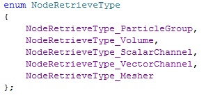

NodeRetrieveType

This enum is used in conjunction with GetNode or GetNodes to retrieve a certain type of node from the framework.
NodeRetrieveType_ParticleGroup
ParticleGroup
NodeRetrieveType_Volume
Volume
NodeRetrieveType_ScalarChannel
Scalar (Floating Point) Channel
NodeRetrieveType_VectorChannel
Vector Channel
NodeRetrieveType_Mesher
Implicit Mesher